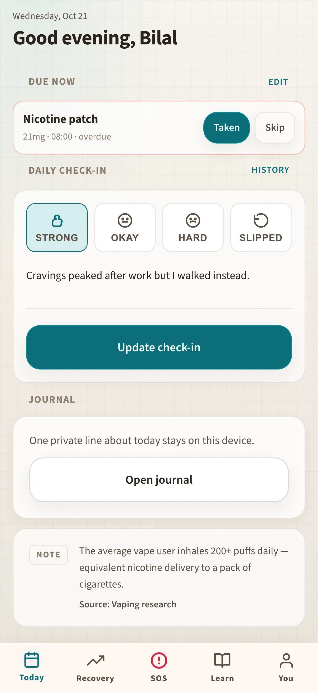

Illustrative story Illustrative story. People and data are fictional.
SteadyCap · Karachi, Pakistan
How Bilal rebuilt a quiet morning routine
Bilal works late warehouse shifts in Karachi. Dawn check-ins on iPhone, craving forecast on a shared iPad at lunch, journal and SOS on laptop and phone at night — never scored, never shamed, always fictional.
“I log my day. Nobody scores me.”

Before and after
Made-up numbers for a fictional week — not a real customer case.
Before
After SteadyCap
A fictional day with Bilal
Sample screens for the story — not a recorded real session.
-
Wake check-in
Still half-asleep in the dark kitchen, Bilal opens Today on his iPhone and marks how the night went — no streak banner, no red shame, just a quiet tick before the bus.
-
Medicine list
He scrolls the medicine list on the same phone and ticks morning meds while the kettle boils, then drops the phone in his pocket and locks the door.
-
Craving forecast
On warehouse break he borrows the shared iPad and opens the craving forecast — a hard window flagged for late afternoon, so he texts his sponsor a simple “watching it.”
-
Journal on the laptop
At home he types three honest lines on his laptop while tea cools — private, on-device, nobody scoring the words.
-
SOS contacts
Before bed he opens SOS on the phone and confirms his brother and sponsor are still one tap away, names readable, no scavenger hunt through contacts.
-
Quiet close
Laptop stays on the desk with Today closed. He missed one tick at lunch; the app does not punish him for it.
Watch it
A day across devices — silent walkthrough with captions. No autoplay with sound.
Read transcript
Bilal checks in on iPhone at dawn, ticks meds, reads a craving forecast on iPad, journals on laptop, confirms SOS contacts, and closes the day without guilt. Fictional sample data throughout.
Features Bilal uses
Illustrative story. People and data are fictional.